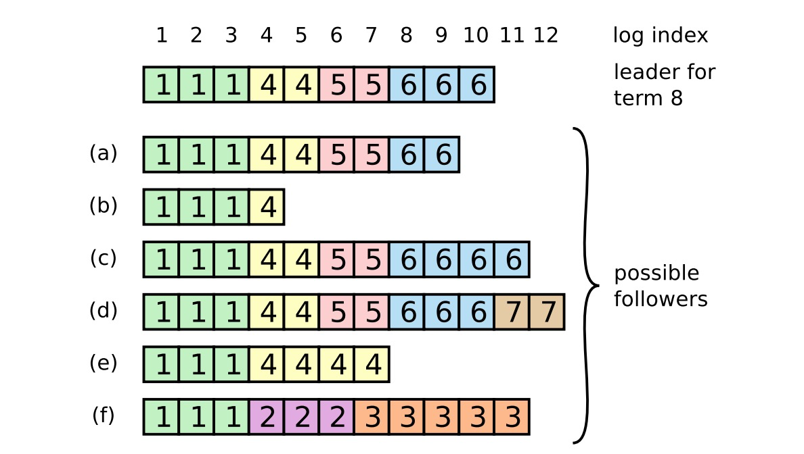

分布式一致性理论与算法¶
本文在一开始会简单的讲述一下系统的演进和分布式系统面临的问题；接着解释几个分布式系统下的常见概念，如 CAP、BASE、拜占庭将军问题、一致性等；最后通过一个“数据复制”的实际问题来看一下 Paxos 和 Raft 算法。
本篇文章过长，大约 4w 字，正常速度读完、不加思考也一小时以上，大家谨慎服用。
1. 序¶
分布式一致性是一个很大的概念，我们经常会听到分布式缓存、分布式事务、分布式文件系统、分布式锁等等和“分布式”有关的概念。它们之间有什么异同？解决了哪些问题？为什么会有分布式的出现？
1.1 传统的单体应用¶
在互联网早期，流量还很少的时候，一个系统所需要的所有资源都放在同一台服务器上。包括数据库、文件存储、反向代理、应用等等，这个时代的代表是 LNMP 或者 LAMP 系统。现在依然有大量的 LNMP 系统存在，比如很多博主的博客网站、一些公司的门户网站等等。
只需要一台服务器，即可完成一切的操作。显然，这样做是存在一些风险的：
- 所有的数据都在同一台服务器上，一旦这台服务器有损，所有的数据都有丢失的风险;
- 同一台服务器跑多个进程，可能会存在互相争抢资源的情况
- 不同的进程对资源的需求也是不同的，有的需要高 CPU，有的需要高内存，一台机器很难满足这种差异化需求。
{kind=link}
而随着服务被越来越多的访问，“all in one”的形式所带来的弊端就表现的更加明显。
1.2 进程的拆分¶
这个时候，开始将不同的进程分拆到不同的机器上去。比如将数据库和文件存储用一台专门的服务器部署。应用服务器通过 TCP 和这些服务器进行通信。
{kind=link}
但是这也带来了一定的问题。
原本所有的服务都在一台机器上，通信都在本机直接完成，失败的可能性很低，几乎可以忽略。但是当服务拆分到不同的服务器并通过网络进行通信后，问题就出现了。首先网络总是不可靠的，丢包、延迟、篡改总是不可避免；同时还存在服务宕机的问题；对于某些重要的数据，只存放在一台服务器上显然也是不满足数据完整性要求的，因为磁盘可能会破损。
这就出现了几个问题：
- 单实例都存在宕机无法提供服务问题
- 文件存储服务器磁盘不够用
- 数据库单实例存在数据丢失问题
- 单个应用服务器无法承载越来越大的流量
1.3 文件服务器集群化¶
随着文件越来越多，单实例机器很难通过外挂磁盘来解决存储问题，同时单实例也存在严重的数据丢失和宕机风险。为了让文件系统具备更高的可用性及扩展性，将文件系统集群化成为一种解决方案。通过一些手段，将不同机器的磁盘整合起来，统一对外提供存储服务。内部将数据 sharding 到不同的机器上进行存储，同时根据需要进行多副本备份。
这样就解决了文件存储的问题。
1.4 数据库主备模式¶
对于数据完整性要求比较高的服务，比如 MySQL。一台服务器对外正常提供服务，同时有一台备机，平时只同步主机的数据。一旦主机宕机了，直接切换到备机，继续提供服务。
因为数据有了备份，所以当一台机器磁盘破损的时候，可以从另一台机器把数据恢复。两台机器丢失同一份数据的几率还是很少见的，所以准备模式可以极大的保证数据的完整性，如果是一主多备，那完整性将会更高。当前业界一般会把同一份数据做三个备份。
1.5 服务水平扩展¶
数据安全暂时有了保证，但是随着业务的不断发展，当流量越来越高的时候，一台应用服务器难以承载大量请求，应用层的可用性怎么保证？
这时候开始将服务进行水平扩展，也就是通常说的：加机器。一台机器承载不了，那就再加一台。
对于一些小型的项目，到这里其实已经能够满足 99% 的需求了，但是当业务需求越来越多，系统越来越复杂，所有的功能都跑在一个进程里的模式，开始冒出了很多的弊端。
首先，研发效率降低了，系统越来越臃肿，每次开发、调试、部署都会耗费大量的时间；其次，代码可维护性降低了，所有的功能全部集中在一起，牵一发而动全身；还有包括代码结构越来越不清晰、添加一个新功能需要更多的 hook 和时间、新员工很难快速理解代码并投入开发在内的各种各样问题。
1.6 从单体应用到微服务¶
这个时候，开始对系统进行微服务化改造。将原本一个大的单体应用，拆分为多个小的系统，系统之间通过 HTTP 或者 RPC 进行调用，系统各司其职。
{kind=link}
至此，系统的演进告一段落，但是真正要面临的问题才刚刚开始。微服务、分布式的好处显而易见，但与此同时，除了享受便利，还需要解决便利所带来的问题。
2. 分布式带来的挑战¶
多个服务器的磁盘如何高效利用？ 为了有更大的空间存储文件，不得不将多个服务器组合起来，这就是分布式文件系统所解决的问题。NFS、DFS、GFS 等都是分布式文件系统领域最核心的模型。在此之上衍生出了许许多多工业级的分布式文件系统，比如 FastDFS、HDFS 等。数据的复制怎么保证一致？ 前面有提到，一个 MySQL 实例无法保证数据不丢失，所以需要一个甚至多个副本，这就不可避免的要做数据同步。多副本同步数据时，如何保证数据同步完成后，所有实例的数据能够保持一致，是一件非常难的事情。
这个也是本文的主要内容，后面会做详细的分析。多个数据库如何执行事务？ 对于微服务来说，一个请求操作不同的数据库是很常见的。一些很重要的操作，需要保证严格的事务，单个数据库比较好操作。但是如果操作的是多个数据库，就需要一些特殊的手段来达成这个目的。
分布式事务的解决方案有很多，比如二阶段提交、三阶段提交、XA、saga 柔性事务等等。分布式事务不是本篇文章主要讨论的问题。如何使缓存更加高效？ 单机环境下，做本地缓存就可以了。但是当机器越来越多的时候，如果每台机器都做本地缓存，那么就会出现数据冗余，降低了缓存的可用性。这个时候，就需要一个独立于应用之外的分布式缓存出现。所有的应用都共享一个分布式缓存，这样就可以避免同一份数据被多次缓存的问题。分布式环境下如何执行定时任务？ 有一些任务需要定时执行，单机环境下直接定时执行就好了。但是分布式环境下，多个机器可能会同时执行同一个定时任务，会造成重复执行，不仅可能造成数据错误，而且浪费了资源。所以需要有一种方式可以让一个分布式集群中只有一台机器可以执行这个任务。一般情况下，通过分布式锁来解决这个问题。
全局只有一把锁，哪台机器获取到了这个锁，哪台机器就可以执行这个任务。小结
为了解决分布式带来的挑战，分布式存储系统、分布式缓存、分布式锁、分布式事务等被一个一个的提出来。每一个技术都解决了一种特定的业务。
- 分布式文件系统：解决了大文件的存储问题
- 分布式缓存：解决了缓存共享的问题
- 分布式事务：解决了一次请求访问多个数据库的问题
本篇文章主要内容不会涉及到上述技术，而是侧重于“数据同步”这个细分领域。本文的主角 Paxos 解决的是分布式的共识问题，通俗的说就是多个机器如何对一个值达成一致；而 Raft 解决的是复制状态机问题。
3. 分布式基础理论¶
3.1 分布式面临的问题¶
应用由单体应用切换到分布式后，首先面临的就是网络问题。原本本机内通信的方式改成了使用网络通信，而网络是不可靠的。网络可能因为一些硬件或者其他原因导致网络不可用；数据包可能会丢失，可能会被篡改；网络还有延迟。单体应用下，一个操作只会是成功或者失败，而分布式环境下，还多了一个超时。超时的操作可能成功也可能没有成功，这个时候就很难做出判断。
其次，是并发的问题。两个节点同时对外提供服务，两个客户端分别请求两个节点，对同一个数据进行修改，最终可能就会导致数据不一致。
{kind=link}
最后还有顺序问题。一个值先 add 1，再 get，对于单体应用来说很好判断结果，但是对于分布式应用来说就很难。因为网络存在延迟、请求路由存在不确定性，最终 get 到的值就很难断定。所以，两个操作之间需不需要有顺序 、如何确定两个操作的顺序，是需要考虑的。
3.2 拜占庭将军问题¶
3.2.1 问题的提出¶
由于网络的不可靠性，从 A 发出的请求，到达 B 后，可能会被篡改或者由于计算机系统自身的原因导致数据混乱，最终 B 收到错误的信息，进而导致整个集群数据不一致。拜占庭将军问题被认为是容错性问题中最难的问题类型之一。Lamport 在他的论文中，通过一个“攻占拜占庭城邦”的故事首先提出了这种问题
一组拜占庭将军分别各率领一支军队共同围困一座城市。为了简化问题，将各支军队的行动策略限定为进攻或撤离两种。因为部分军队进攻部分军队撤离可能会造成灾难性后果，因此各位将军必须通过投票来达成一致策略，即所有军队一起进攻或所有军队一起撤离。因为各位将军分处城市不同方向，他们只能通过信使互相联系。在投票过程中每位将军都将自己投票给进攻还是撤退的信息通过信使分别通知其他所有将军，这样一来每位将军根据自己的投票和其他所有将军送来的信息就可以知道共同的投票结果而决定行动策略。
系统的问题在于，将军中可能出现叛徒，他们不仅可能向较为糟糕的策略投票，还可能选择性地发送投票信息。假设有 9 位将军投票，其中 1 名叛徒。8 名忠诚的将军中出现了 4 人投进攻，4 人投撤离的情况。这时候叛徒可能故意给 4 名投进攻的将领送信表示投票进攻，而给 4 名投撤离的将领送信表示投撤离。这样一来在 4 名投进攻的将领看来，投票结果是 5 人投进攻，从而发起进攻；而在 4 名投撤离的将军看来则是 5 人投撤离。这样各支军队的一致协同就遭到了破坏。
由于将军之间需要通过信使通讯，叛变将军可能通过伪造信件来以其他将军的身份发送假投票。而即使在保证所有将军忠诚的情况下，也不能排除信使被敌人截杀，甚至被敌人间谍替换等情况。因此很难通过保证人员可靠性及通讯可靠性来解决问题。
假使那些忠诚（或是没有出错）的将军仍然能通过多数决定来决定他们的战略，便称达到了“拜占庭容错”。在此，票都会有一个默认值，若消息（票）没有被收到，则使用此默认值来投票。
上述的故事映射到计算机系统里，将军便成了计算机，而信差就是通信系统。虽然上述的问题涉及了电子化的决策支持与信息安全，却没办法单纯的用密码学与数字签名来解决。因为电路错误仍可能影响整个加密过程，这不是密码学与数字签名算法可以解决的问题。因此计算机就有可能将错误的结果提交，最终导致错误的决策。
3.2.2 拜占庭容错¶
如何解决拜占庭将军问题，业界提出了很多种理论和算法。
- 其中一个解决方案认为即使出现了伪造或错误的消息。只要有问题的将军的数量不到三分之一，仍可以达到“拜占庭容错”。原因是在背叛的将军不足三分之一的情况下，有问题的将军可以很容易的被纠出来。但是超过或等于三分之一时就很难判断了，比如有将军 A，将军 B 与将军 C。当 A 要求 B 进攻，却要求 C 撤退时。就算 B 与 C 交换所收到的命令，B 与 C 仍不能确定是否 A 有问题，因为 B 或 C 可能将窜改了的消息传给对方。以函数来表示，将军的总数为 n，n 里面背叛者的数量为 t，则只要 n > 3t 就可以容错。
- 另一个解决方案需要有无法消去的签名。在现今许多高度信息安全要求的关键系统里，数字签名就经常被用来实现拜占庭容错，找出有问题的将军。
- 此外，1980 年代还有其他用来达到拜占庭容错的架构被提出，如：FTMP、MMFCS 与 SIFT。
- 1999 年，卡斯托（Miguel Castro）与李斯克夫（Barbara Liskov）提出了实用拜占庭容错（PBFT）算法。该算法能提供高性能的运算，使得系统可以每秒处理成千的请求，比起旧式系统快了一些。
- 在 PBFT 之后，许多用于拜占庭容错（BFT）的通信协议也被提出来改善其通信的强健性与效率。比如 Q/U、HQ、Zyzzyva 与 ABsTRACTs，用来提升效率
- 区块链技术中，比特币核心技术 pow，其实也是为了解决拜占庭将军问题。
拜占庭将军问题不是本文的主要内容，后续讲的 Paxos、Raft 算法也是在不考虑拜占庭将军问题的前提下提出的。上述有关拜占庭将军问题的内容大部分摘自维基百科相关词条，我做了一些修改和补充。
3.3 分区的产生¶
分布式系统中，节点与节点之间通过网络进行通信，而网络的不可靠可能会导致节点与节点“失联”。
{kind=link}
由于网络的中断，导致一个大的集群变成了两个子子群，这两个子集群就是两个不同的分区。分区出现后，在 A 分区对 X 进行的操作，B 分区是不可见的，这样一来，数据就会不一致。
所以，当分区出现的时候，如果分区依旧对外提供服务，那么就会导致数据不一致；如果一定要求数据保持一致，那么当分区出现的时候，就不能允许继续对外提供服务。
这就是 CAP 定理的由来。
3.4 CAP 定理¶
CAP 定理是针对分布式系统的一个定理。其中，C 指 Consistency（一致性），A 指 Availability（可用性），P 指 Partitition tolerance（分区容忍性）。
CAP 定理认为，同一时间最多只能满足三个条件中的两个，无法同时满足三个条件。
3.4.1 来源¶
这个定理起源于加州大学柏克莱分校的计算机科学家 Eric A. Brewer 在 2000 年的“分布式计算原理研讨会”上提出的一个猜想。2002 年，麻省理工学院的 Seth Gilbert 和 Nancy Lynch 发表了“CAP 猜想”的证明，使之成为一个定理
Gilbert 和 Lynch 证明的“CAP 定理”、比“CAP 猜想”在某种程度上更加狭义。定理讨论了在两个互相矛盾的请求到达彼此连接不通的两个不同的分布式节点的时候的处理方案。
3.4.2 内容¶
Consistency（一致性）
分布式系统中存在大量的 并发 读写操作，这些并发操作衍生出了对一致性的需求
CAP 定理中的一致性指的是：一个节点进行数据更新操作后，结果必须立即对其他所有节点可见，也就是线性一致性，下文会有详细的论述。
如图所示：
{kind=link}
对 node-a 进行 set 操作后，要求对 node-b 和 node-c 进行读取时，一定可以读取到最新值。
这种一致性是一种强一致性，也被称之为线性一致性
Availability（可用性）
可用性指的是：用户对集群的任何读写操作都是 成功 的。
也就是说，集群对外统一提供的服务应该一直可用，即使集群内部出现各种宕机、网络抖动等问题。但是现实中有些问题可能无法避免，比如因机房起火、地震等因素导致的服务不可用是很难通过纯技术来解决的。一般会用“几个 9”来描述一个系统的可用性，通常会根据全年停机时间来进行计算。
| 可用性 | 可用水平（%） | 年可容忍停机时间 |
|---|---|---|
| 容错可用性 | 99.9999 | < 1 min |
| 极高可用性 | 99.999 | < 5 min |
| 具有故障自动恢复能力的可用性 | 99.99 | < 53 min |
| 高可用性 | 99.9 | < 8.8 h |
| 商品可用性 | 99 | < 43.8 h |
通常，说某个系统可用性可以达到 5 个 9，意思就是说他的可用水平是 99.999%，即全年停机时间不超过 (1-0.99999)*365*24*60 = 5.256 min，这是一个极高的要求。 在 CAP 定理中，不考虑自然因素的影响，可用性指的是 100% 可用。
Partitition tolerance（分区容忍性）
分区容忍性指的是：集群因为某种原因产生分区后，各分区仍然能够独立对外提供服务。
分区指的是由于某些原因，比如网络不通等，导致一个集群被分成多个不可通信的子集群，这个时候如果依然允许子集群对外正常提供服务，那么就说这个集群是分区容忍的。
分区和宕机不同，宕机的节点无法接收网络请求，负载均衡设备可以自动将流量切走；但是分区的节点本身是正常的，依然可以正常接收网络请求，负载均衡设备很难决定是否执行切流。这就会造成子集群的出现。
3.4.3 定理证明¶
由于网络总是不可靠的，而分布式集群的基础就是多机网络通信，所以 分区是不可避免的，因为分区总可能出现，如果允许在分区出现的时候，各子集群可以正常对外提供服务，那么： CP 分区之间无法通信，数据互相不可达，对于写请求，是无法让所有的节点都更新成最新值的。
如果要保证一致性，那写请求就只能返回失败，这就违反了可用性。
此时系统满足 CP。
CP 系统，出现分区，不能保证数据写入到所有节点，返回写入失败，违反可用性。AP 如果一定要保证可用性，那么写请求的数据就只能存在当前分区的节点上，而其他分区的节点无法更新为最新值，每个分区内同一数据的值可能都是不一样的，这样就违反了一致性。此时系统满足 AP。
CP 系统，出现分区，为保证可用性，导致各个分区内同一个数据的值不一样，违反一致性。CA 如果当分区出现时候，直接不对外提供服务，那么可以同时满足 CA。
CA 系统，不允许出现分区，一致性和可用性都可以满足，违反分区容忍性。结论 根据上述推算，一个分布式系统无法同时满足 CAP 三个条件，只能选择其中两个，这就是 CAP 定理。
3.4.5 缺陷¶
虽然 CAP 是一个定理，但是也并不意味着所有的分布式系统都满足 CAP 或者必须按照 CAP 来设计。原因是 CAP 是一个很理想的定理，而现实总是很残酷
比如可用性，真实世界里是没有办法满足 100% 可用的，即使三地五中心也可能会导致数据全部丢失，只不过可能性微乎其微而已。
CAP 中要求在 C 和 A 之间一定要做一个选择，对于实际的应用而言很难接受，也是不必要的。要一致性就不能满足可用性，要可用性就不能满足一致性，这种非黑即白的设计很难满足大多数系统的要求。工业界更多的选择是在 C 和 A 之间找到一个平衡。这也就有了“最终一致性”，“BASE 理论”等概念。
3.5 BASE 理论¶
BASE 理论是 eBay 架构师结合 CAP 定理与实际分布式应用设计总结出的新的理论，核心思想是，在满足分区容忍与适当的可用性的条件下，根据自身的业务特点，采用适当的方式来使系统达到最终一致性。
其中，“BASE”是“Basically Available（基本可用）”、“Soft State（软状态）”和“Eventually Consistent（最终一致性）”三个短语的缩写。
CAP 是一个 定理，而 BASE 是一个 理论。BASE 理论本质上是 CAP 定理满足 P 的条件下，在 C 和 A 之间找到一个符合特定系统实际情况的平衡。
3.5.1 来源¶
对于一个实际的分布式系统而言，失去一致性与可用性中的任何一个，都是难以接受的。而且在某些场景下，强一致性与 100% 可用性并不是非要不可
来考虑这样一个场景：12306 售票。
在 12306 买票的时候，要先选择车次，看是否有余票，如果还有票，那么可以下单购买。这个场景分为两步：1.检查是否有余票（get num）；2.下单购买（get num & num--）。因为火车的座次是一人一座的，所以必须保证同一个座位同一个时间的票只能售卖一次。
从检查是否有余票到真正完成下单之间是有一段时间的，很有可能在开始检查余票的的时候还有票，但是在犹豫要不要买的时候，票被被人买了；这个时候我依然可以下单，但是根据票和座的关系，购买操作会被拒绝。
对于“检查是否有余票”这个操作来说，这个余票的数字（get num）不一定要求是最新的，比如实际只有一张票了，但是返回还有 2 张也没有关系，这个数据可以不是强一致性的。
而对于“下单购买”这个操作来说，余票的数字就必须是最新的（get num & num--），此时数据要满足强一致性。
在春运抢票的时候，因为系统容量问题，无法承载所有请求，这个时候如果不进行特殊处理，那服务器一定会被打垮，这和是否 CAP 没有关系，CAP 并不能解决流量洪峰问题。所以只能对流量进行限流，保护应用服务器。而限流会造成用户的当前请求不可用，但并不会导致整个 APP 不可用，这就是一个基本可用的状态。
所以，强一致性和完全可用对于某些业务场景来说，并不是必需品。CAP 定理固然是一个事实，但是解决实际问题的时候，还是应该考虑实际情况。而 BASE 理论就是根据实际的业务诉求与 CAP 定理相结合而总结出来的。
3.5.2 内容¶
Basically Available（基本可用） 分布式系统在出现不可预知故障的时候，允许损失部分 可用性（系统整体依然可用）
- 响应时间的损失。查询余票正常情况下 1s 即可拿到结果，但是出现故障的时候，可能需要 2s。
- 系统功能的损失：抢票的时候，对用户进行限流，虽然无法完成既定功能，但是提升了用户体验。
Soft State（软状态） 允许系统中的数据存在中间状态，并认为该状态不影响系统的整体可用性，即允许数据异步同步过程中存在延迟。Eventually Consistent（最终一致性） 允许数据同步存在延迟，但是需要保证在规定的时间内，数据最终会达到一致。时间期限需要综合实际情况进行设计。
3.6 一致性¶
上面解释了分区和可用性，但是对于一致性还没有一个明确的定义。当谈到一致性的时候，会遇到这样几个词：CAP 定理中的 consistency；ACID 中的 consistency；cache 一致性协议中的 coherence；以及 Paxos 中的 consensus。
coherence、consensus 和 consistency 一般都被翻译为“一致性”，那么它们有什么异同呢？
3.6.1 什么是一致性¶
当谈到一致性的时候，会遇到这样几个词：CAP 定理中的 consistency；ACID 中的 consistency；cache 一致性协议中的 coherence；以及 Paxos 中的 consensus
coherence、consensus 和 consistency 一般都被翻译为“一致性”，那么它们有什么异同呢？
coherence Coherence 只出现在 Cache Coherence 一词中，作为”缓存一致性”被提出。现代计算机一般都是多核机器，每个 CPU 各自拥有 L1 和 L2 缓存，同机的所有 CPU 共享一个 L3 缓存。当编写并发程序并产生竞态数据时，如何保证一个 CPU 可以读立即读到另一个 CPU 刚刚写入的数据，成为一个需要考虑的问题。而“Cache Coherence”就是用来解决这个问题的。
consensus 准确的说，consensus 应该被翻译为“共识”，它主要解决的是如何使多个节点对同一个事件达成共识的问题。一般来说，在分布式系统中，解决的是复制状态机的问题。
ACID 中的 consistency ACID 中的一致性是指数据库的一致性约束，ACID 一致性完全与数据库规则相关，包括约束、级联、触发器等。分布式事务用来保证分布式系统下对多个数据库进行操作的 ACID。
CAP 定理中的 consistency CAP 中的一致性指的是在多个节点之间如何保证数据的强一致。 CAP 中的 consistency 一般指的是“线性一致性”。
但是 CAP 定理在解决实际问题中作用有限，因为 CAP 中的强一致性与百分百可用性本身就很难甚至无法实现，要求再这两者之间必须选一放一对于一个真实的应用来说过于苛刻。所以在 CAP 定理的基础上，有人根据实际问题的解决方案提出了“BASE 理论”，也就是“Basically Available（基本可用）”、“Soft State（软状态）”和“Eventually Consistent（最终一致性）”。
BASE 理论不要求数据的强一致性，转而采用一致性要求更低的最终一致性，从而使系统具有更高的可用性。
3.6.2 怎样可以称之为“一致”¶
一个系统是由 状态 和一些 导致状态转移的操作 组成的。在系统运行期间，它将随着操作的不断进行从一个状态转移到另一个状态。需要保证这种状态的改变是可控的，从而可以判断出经过状态改变后的最终状态是否正确。也就是说，需要一种规则，可以更加清晰的判断出最终状态是否正确
满足规定的结果，即“正确”，就说这个状态的改变是“一致”的。
比如：
上面这几行伪代码执行之后，输出的结果应该是 1 3，这个应该没有什么问题，下意识的就可以得出这个结论。但是为什么不可能是 5 6，甚至不可能是 helloword 呢？
这是因为，上述结果默认了一种“正确性规则”：设置一个状态的值之后，读取到的一定是最新设定的值。所以读到 1 3 是正确的，而读到其他内容是错误的。
当然，也可以重新定义一种规则，比如：设置一个状态的值之后，读取到的一定是最新设定的值 +1，那么读到 2 4 才是正确的。
但是无论规则是什么，总是要有一种规则来使计算机的状态改变变得可控并且可被判断，否则这个程序是没有意义的，这就是“正确性”的价值所在。
而满足“正确性”的规则，就是现在所讨论的“一致性模型”。
一旦把变量写为某个值，比如 a，那么读操作就应该返回 a，直到再次改变变量。读到的值应该总是返回最近写入的值。一般会把这种系统称为“单一 寄存器 ”（并不特指硬件寄存器）。
3.6.3 顺序¶
顺序指的是，多条命令之间的先后顺序。比如在一个单进程单线程模型中
x 显而易见是 1。
但是当上述代码变为多线程执行后，x 的值就很难确定了。
因为 A 和 B 同时执行，顺序未知，所以 x 的值是不确定的。这个时候就需要进行并发控制，比如锁、原子类、内存屏障等等。这些操作的目的，是让某个线程对某个变量的修改，可以立刻被其他线程所看到。
分布式环境下，请求的处理和多线程模型很相似。所以也需要进行“并发控制”。但是正如上面“BASE 理论”中所讲的一样，有些情况下并不一定需要“修改立刻可见”，这也就出现了不同的“一致性”概念。
3.6.5 一致性分类¶
这里以及下文所讨论的一致性都是是 CAP 定理中的 consistency。
在单机单 CPU 环境下，一致性是很容易被满足的，因为所有的状态改变都是顺序执行的，只有执行完第一个操作以后，才会执行第二个操作。这就使得满足一致性变得非常简单。
但是在分布式环境下，同一个状态在多个节点分别被修改，如何使得在某一个节点上的修改被其他节点所看见，是一个必须考虑的问题，否则就会出现不一致的现象。
一致性根据强弱大体可以分为以下几类：
-
完全一致性
-
强一致性
-
线性一致性
-
较强一致性
-
顺序一致性
-
弱一致性
-
最终一致性
- 因果一致性
- 读己之所写一致性
- 会话一致性
- 单调读一致性
- 单调写一致性
完全一致性
完全一致性指的是 A 对 x 做的修改，立刻可以被 B 观察到，不存在读取到旧值的情况。完全一致性几乎没有办法实现，对于硬件来说，对一个值得修改，从寄存器到磁盘到缓存总是需要一定时间的，既然存在一定的时间消耗，哪怕几微秒，也无法达到完全一致性。从网络上来说，网络存在开销，这个开销比硬件的开销要大的多得多得多，就更不可能实现了。
所以，完全一致性只是一种理论上的模型。
线性一致性 线性一致性是当前计算机体系中可以达到的最强的一致性模型。一般说的强一致性就指的是线性一致性。要求： 变更是原子的，发生在请求和响应之间的某个时间点，并且变更后内容立即对其他节点可见。
下面看一个例子：
{kind=link}
首先设置 x 的值为 1；一共有 6 个进程对 x 进行操作，其中 C 进程修改了 x 的值。线段 t 表示全局时间，A-F 进程中的线段分别表示每个线程的执行时间跨度，线段的起点表示命令开始执行的时间点，线段的终点表示命令执行完成、可以获取到返回值的时间点。图中两条竖直的虚线 t1 和 t2 表示 C 进程对 x 做修改的开始时间和结束时间。
因为变更是原子的、发生在请求和响应之间的某个时间点，所以 x=2 一定发生在 t1 和 t2 中间的某一刻，而不可能发生在 t1 之前或者 t2 之后。 来分别看一下各个读线程可能读到的值。
- 进程 A：开始时间和结束时间都小于 t1，所以只能读到 1，不可能读到 2。
- 进程 B：开始时间小于 t1，结束时间大于 t1，所以可能读到 1，也可能读到 2，取决于“真正执行 B 的时间点”和“真正执行 C 的时间点”的关系。
- 进程 D：开始时间大于 t1 但是小于 t2，结束时间大于 t2，可能读到 1，也可能读到 2。
- 进程 E：开始时间大于 t2，所以只能读到 2。
- 进程 F：开始时间小于 t1，结束时间大于 t2，可能读到 1，也可能读到 2。
综上，如果要求满足线性一致性，那么 A 只能读到 1，E 只能读到 2，其他线程读到 1 和 2 都可能。
漏斗模型 上面使用一个线段来表示命令的执行，有人提出了一种漏斗模型，来更确切的进行描述。
{kind=link}
漏斗模型使用一个折线来表示命令的执行情况，起点和终点依然表示开始和结束时间，中间的拐点表示“该命令真正执行的时间”，也就是线性一致性所要求的 “发生在请求和响应之间的某个时间点”。
在漏斗模型中，可以很清楚的知道，命令真正生效的时间，按上图来看：
- 进程 A：只能读到 1
- 进程 B：只在读到 1
- 进程 D：只能读到 2
漏斗模型更能体现出线性一致性的要求，但是从实际情况来看，很难甚至无法明确出拐点到底出现在哪个时间点。所以，一般从生产情况出发，进 程 B 和 进 程 D 读到 1 和 2 都是可以满足线性一致性的。 > 漏斗模型是一种理论价值很足的模型，但是很难用于生产。顺序一致性 > Sequential consistency 的是 Lamport 在 1979 年首次提出的。（参看他的论文 How to make a multiprocessor computer that correctly executes multiprocess programs）
线性一致性的实现成本是很高的，顺序一致性的要求比线性一致性低一些。要求：变更是原子的，不要求执行顺序按照真实发生的时间进行，但是单个进程内的操作顺序必须与编码时相同。
怎么理解呢？线性一致性要求所有的操作在全局是有序的，而顺序一致性弱化了这个要求，只需要在进程内有序即可，不需要全局有序。
下面来看一个例子：
{kind=link}
假设 x 值为 1，有 A、B、C 三个进行分别对 x 进行一次货多次操作。一共有 6 个操作，箭头依旧表示操作的起止时间。
操作落到计算机上，最终是会有一个执行顺序的，比如 123456，或者 654321。6 个操作可以任意排列组合。线性一致性要求“变更立刻可见”，对于读操作，顺序其实不重要，但是一旦涉及到写，那就一定有先后顺序。比如“操作 1”一定不可能读到 x=3，因为“操作 3”在全局看来发生在“操作 1”之后。
顺序一致性弱化了这个对顺序的要求。只要最终操作执行的顺序，符合单个进行内操作的顺序即可。对于上图来说就是：2 3 4 一定按照这个顺序执行，5 6 一定按照这个顺序执行，至于 2 和 5 谁先谁后无所谓。比如：
- 1 2 3 4 5 6：这个顺序满足顺序一致性要求。
- 1 2 5 3 6 4：这个顺序满足顺序一致性要求。
- 1 5 6 2 3 4：这个顺序满足顺序一致性要求。
但是 2 3 4 和 5 6 的顺序不能变：
- 1 2 4 3 5 6：这个就不满足顺序一致性。
扩展：多核 CPU 下的一致性 上面有提到“缓存一致性”，是用来解决多核 CPU 缓存问题的。当前，多核 CPU 架构共有三级缓存，每一个 CPU 有自己独立的一级和二级缓存，所有 CPU 共享一个三级缓存。
当只有读操作的时候，显然没有什么问题，缓存里的内容就是内存里的内容。但是一旦涉及到写操作，事情就有点复杂了。CPU 的写有直写和回写两种方式。直写可以简单理解为直接写入内存，让缓存过期。而回写，为了提高速率，只写入自己的缓存，等到一定时间之后，再回写到内存。
如果不做任何处理，回写会有并发的问题，一个 CPU 的修改只保存在自己的缓存上，其他的 CPU 看不到，就会出现脏读。
为了解决这个问题，需要使用一种机制，可以让回写的数据可以被其他 CPU 读到，这就是 MESI 协议（当然还有一些其他协议）。
一般 CPU 的设计，比如 x86 架构下，是允许指令重排的，这就导致顺序一致性可能会被破坏。CPU 一般不禁止指令重排，而把它抛给上层去控制，这也就是为什么会有 CAS、内存屏障、原子变量等技术，编码人员根据自己的需要，插入内存屏障阻止指令重排，最终达到顺序一致性。
感兴趣的同学可以去了解一下 MESI 协议和缓存一致性技术，这里简单提一下，就不扩展了。最终一致性
最终一致性是弱一致性里最常见的一种，一般系统的设计都会考虑设计为最终一致性。最终一致性有分为以下几种：
- 因果一致性：两个有因果关系的事件要保证在全局看来有序，比如知乎提问和回答。当你能看到回答的时候，一定可以看得到问题。达到因果一致性需要一个向量时钟来表示两个操作之间的因果关系，其中比较有名的是 Lamport 提出来的“Lamport 时间戳”，感兴趣的可以自行搜索学习。
- 读己之所写：可以立即读到我自己写入的数据，但是别人不需要立即读到。比如我发一个朋友圈，我自己必须一直可以看到，但是我的好友可以晚一点看到。实现这种一致性的一种方式是做会话保持，都从同一个节点读取。
- 会话一致性：这个是读己之所写的一种特殊场景。
- 单调读：如果一个进程读取数据项 a 的值，那么该进程对 a 执行的任何后续读操作总是得到第一次读取的那个值或更新的值，为了避免出现时光倒流的现象。
- 单调写：保证来自同一个进程的写操作顺序执行。
每一种一致性铺开了讲都能写好几篇文章出来，这里就简单的概括总结一下，感兴趣的同学可以自行深入学习。
4. 从数据复制看一致性¶
上面的内容都是一些背景和理论，到这里才算是进入了本篇文章的核心内容：数据复制。首先来看这样一个问题：
{kind=link}
有很多场景需要做数据同步，比如：数据要备份，存多个副本；MySQL 主备数据同步；zookeeper 节点之间数据同步等等。但是由于网络不可靠、机器宕机、磁盘破损等问题的存在，数据同步的可靠性大大的降低。如何能够将数据完整的同步到所有的节点？
4.1 主从异步复制¶
{kind=link}
主从异步是最容易想到的方式，主收到请求后，直接返回 success，然后异步的将数据同步到 slave 节点。但是，如果在主节点还没有同步之前，主节点磁盘破损，或者网络故障导致没有同步成功，那么就会导致数据丢在或者集群数据不一致等问题。
4.2 主从同步复制¶
既然异步存在同步不成功的问题，那么直接改成同步的：
{kind=link}
master 节点收到配置以后，先同步到所有的 slave 节点，全部成功以后再向客户端返回成功。但是由于整个过程都是同步阻塞的，rt 会变高甚至超时。如果是同步数据的请求超时，很难判断是成功了还是失败了，这样只能全部回滚，增加了很多不必要的处理。
4.3 主从半同步复制¶
既然全同步会影响 rt，异步会导致无法判断时候同步成功，那么一半同步一半异步来处理，即主从半同步方式：
{kind=link}
只要有 x 个节点返回了同步成功，那么就认为是成功了。这样的问题是，可能任意一个节点的数据都是不完整的。为了解决这个问题，在主从半同步的基础上，提出了一种多数派读写的方式。
事实上，很多系统的数据同步都使用的是异步或者半同步的方式，比如 MySQL 的数据备份、主从同步等。但是数据同步并不是一个简单的 HTTP 请求，更多的是一些二阶段提交协议。比如 MySQL 通过二阶段 + binlog + redolog 来完成数据的同步，感兴趣的同学可以自行搜索学习。
4.4 多数派（quorum）读写¶
4.4.1 初识¶
{kind=link}
此时，不分主备，客户端向所有的节点发起读写请求。对于写请求：只要一半返回成功，就认为是成功的；对于读请求，选择占比在一半以上的返回值。
比如有三个节点 A(x=1)、B(x=1)、C(x=1)。
执行 set x = 2 后，A 和 B 执行成功，此时 A(x=2)、B(x=2)、C(x=1)。
执行 get x，A、B、C 分别返回 2、2、1，因为 2 占比一半以上，所以最后 x = 2。
quorum 机制的数据逻辑在于：两个一半以上一定有一个共同的值，所以一定可以读到最新的。
4.4.2 版本号¶
但是只记录值是不能满足需求的，来看这样一个场景
{kind=link}
右侧为集群中的三个节点，其中黄色表示响应，蓝色表示未响应。当执行到第三步时，客户端拿到了 1 和 2 两个值，此时 1 和 2 的数量都不满足半数以上的条件，如果没有其他参数，那么客户端将无法区分哪个是最新值。所以需要一个版本来进行标识，版本号全局递增，版本号大的为最新的值。这样一来，第三步的结果就可以确定了：x = 2。
4.4.3 并发问¶
但是多数派读写也是存在并发问题的：
{kind=link}
如上图：x 初始化为 1，两个进程分别对 x 进行操作，左边执行 x += 1， 右边执行 x += 2，期望最终的结果是 4。
- 两个进行同时执行多数派读，都得到 x = 1；
- 左边的进程执行
x += 1，后，执行多数派写，此时集群中，x = 2； - 右边的进程执行
x += 2，后，如果此时执行多数派写，那么集群中的值将被改写为 3；
这样就出现了并发问题。
所以，为了解决这个问题，每个版本号只能被修改一次。在执行多数派写之前，应该再执行一次多数派读来查询当前要写入的版本号是否过期，如果过期了，那就重新进行一次多数派读。如下图：
{kind=link}
正常流程走下来的话，没有问题。但是这里依然存在一个隐藏的并发问题：如果右边进程和左边进程同时查询 v2 版本的写权限，那么依然会出现版本覆盖问题，因为两个进程都认为自己有 v2 版本的写权限。
所以，让客户端来控制是否写入是没有办法避免并发问题的，只能把判断是否有写入权限的能力交给集群本身。而这就需要集群具有区分客户端的能力。也就是是，每个客户端需要有一个唯一 ID，集群来决定某个客户端是否可以对值进行修改。
4.4.4 客户端版本号¶
如图：这里使用下划线表示节点允许哪个客户端进行操作，节点下方有蓝色的线，表明允许左侧进程执行写操作；有黄色的线表明允许右侧进行执行写操作
{kind=link}
简单地解释一下，左侧进程为 A，右侧进程为 B，节点分别为 a、b、c：
- A 执行多数派读，获得 a 和 b 的写权限。
- B 执行多数派读，获得 b 和 c 的写权限。这里 b 叛变了，此时 A 失去了 b 的写权限。
- A 和 B 分别执行写前查询，判断 v2 是否已经写过，得到可以写入的回应。
- A 开始执行写操作，但是因为只有 a 允许 A 写入，不满足大多数，所以 A 写入失败。
- B 开始执行写操作，b 和 c 都具有写入权限，写入成功。
如果更进一步的提高算法性能，第三步中，A 其实已经不具备写入权限了，不应该执行第 4 步。
A 失败以后会怎么样呢? 提升自己的写入版本号，重新发起写入流程。此时写入的就是 v3 版本，在新的流程中，A 会拿到 v2 版本的值，再进行计算。所以最终会得到正确的结果，不会存在并发问题。
而这：就是 Paxos 的来源。
5. Paxos¶
5.1 初识¶
Paxos 是 Lamport（没错又是他） 1998 年在 The Part-Time Parliament 论文中描述的一个算法，最初使用希腊的一个小岛 Paxos 作为比喻（拜占庭将军问题的描述手法），描述了 Paxos 岛中通过决议的流程，并以此命名这个算法，但是这个描述理解起来比较困难，也没有引起很大的反响。2001 年，Lamport 觉得同行不能理解他的幽默感，于是重新发表了朴实的算法描述版 本_Paxos Made Simple_，简单直接的讲解了该算法。
Paxos 解决的是分布式系统下的共识问题：一个集群如何对一个 key 的 value 是什么达成共识，确定出一个唯一值。
5.2 特点和前提¶
5.2.1 特点¶
- 解决分布式系统如何对一个值达成共识的问题
- 保证分布式系统中值的正确性
- 基于多数派读写
- 使用两轮 RPC 进行决策
- 一个值被确定后不能修改
- 强一致性
5.2.2 前提¶
- 假设磁盘可靠
- 假设不存在拜占庭将军问题
- 允许消息丢失
- 允许消息乱序
5.3 算法描述¶
Paxos 使用两阶段 RPC 来对一个值达成共识，第一阶段 RPC 主要是用来确定自己是否有权限执行"写入"操作；第二阶段 RPC 是执行"写入"操作，和上一部分所讲的多数派读写基本一致。
其中，发请求的节点被称之为 Proposer，而接收请求的节点称之为 Acceptor，当 Acceptor 最终确定了一个值后，会发送给所有的 Learner，最终集群中所有的节点都持有最新被确定的值。
5.3.1 算法成员¶
- Proposer：发起 Paxos 的进程；
- Acceptor：存储节点，接受、处理和存储消息；
- Learner：学习 Acceptor 已经接受的值。多数情况下，Acceptor 就是 learner。
Paxos 并没有规定哪些节点时 Proposer，哪些节点时 Acceptor，也没有规定各个角色的数量。所以每一轮 Paxos 的角色数量任意，节点属于哪个角色也任意，同时允许身兼数职。
5.3.2 算法里的一些概念¶
- Round：1 轮 Paxos，包含 2 个阶段: Phase-1 和 Phase-2。
- rnd：每 1 轮的编号，单调递增; 后写胜出; 全局唯一（用于区分 Proposer）。
- last_rnd：Acceptor 收到的最大 rnd，记住这个值来识别哪个 Proposer 拥有写入权限。
- value：Acceptor 接受的值。
- v-rnd：Acceptor 接受的 value 所在的 rnd。
- Quorum（Acceptor 的多数派）：n/2+1 个 Acceptors。
5.3.3 具体算法¶
- 一阶段
Proposer：
- 全局 rnd + 1，发送一阶段 RPC，并等待应答；
- 如果应答中的某个 last_rnd 大于发出的 rnd，提升 rnd 重新开始；
- 如果应答不够多数派，提升 rnd 重新开始；
- 发送二阶段 RPC。
Acceptor
- 如果请求中 rnd 比 Acceptor 的 last_rnd 小，跳转到第三步；
- 设置 last_rnd 为 rnd，并承诺从此这个 Acceptor 只接受不小于这个 rnd 的 phase-2 请求；
- 返回当前 last-rnd、v 和 v-rnd 的值。
如下图：假设存在 1 个 Proposer p 和 3 个 Acceptor a、b、c（集群成员数一般都是基数，这里为了简化算法，所以只有 4 个），每一个 Acceptor 需要记录三个值：lase_rnd、value 和 v-rnd。
{kind=link}
- Proposer p 提升全局 rnd 为 1，向所有 Acceptor 发送一阶段 RPC；
- Acceptor a 和 b 收到请求，但是 c 没有收到，a 和 b 按照要求修改自己的 last_rnd 并返回；
-
Proposer p 收到了大多数的响应并且所有的 last_rnd 都不大于自己的，所以准备发起二阶段。
-
二阶段
Proposer：
- 从所有应答中选择 vrnd 最大的 v；
- 如果所有应答的 v 都是空，可以自由选择自己要写入的 v ；
- 发起二阶段 RPC 并等待响应；
- 如果获得了半数以上的成功响应，本轮 Paxos 结束；
- 否则继续提升 rnd，重新开启一轮 Paxos。
Acceptor
- 拒绝 rnd 小于 last_rnd 的请求；
- 将请求中的 v 和 rnd 写入本地，此时，v 为本节点“接受的值”。
{kind=link}
如图：
- Proposer p 的一阶段响应中所有的 v 都是空，所以自己可以决定要写入的值；
- Proposer p 发起二阶段 RPC，v = 1，rnd = 1；
- Acceptor a 和 b 收到请求，rnd 符合要求，于是写入 v 和 v-rnd，并返回成功，c 依然没有收到请求。
- Proposer p 收到了半数以上的写入成功响应，本轮 Paxos 结束。
上面就是很简单的 Paxos 共识算法的过程，下面来看一下一个 5 节点 2 Proposer 的完整 Paxos 流程。
5.3.4 完整的 Paxos 流程¶
如下图：左右两侧是两个 Proposer x 和 y， 中间是三个 Acceptor a、b、c。其中，x 希望值为 1 而 y 希望值为 2。
{kind=link}
第一轮 Paxos：
- x 发起一阶段 RPC，rnd = 1；
- a 和 b 响应，修改本地 last_rnd，同时承诺只接受 rnd 不小于 1 的二阶段请求，并返回；
- x 收到大多数响应，可以发起二阶段；
- 与此同时，y 发起一阶段 RPC，rnd = 2；
- b 和 c 响应，因为此时 rnd = 2 > 1， 所以 b 修改自己的 last_rnd 为 2，b 和 c 承诺只接受 rnd 不小于 2 的二阶段请求，并返回。（b 叛变了）
这个时候，x 已经进入二阶段，而 y 刚刚开始。
- x 收到的响应里，v 都是空的，所以设置 v=1， rnd=1，发起二阶段 RPC；
- a，b，c 都收到了请求，但是由于 rnd = 1 \< 2，所以 b 和 c 拒绝了 x 的请求，a 返回成功；
- 因为 x 只收到一个成功响应，不满足大多数，x 结束本轮 Paxos 并提升 rnd，重新发起；
- 此时，y 收到的一阶段响应中，v 也都是空的，所以设置 v = 3，rnd = 2，发起二阶段 RPC；
- a 没有收到请求，b 和 c 收到了，并且 rnd 符合条件，修改自己本地变量并返回成功；
- y 收到两个成功的响应，本轮 Paxos 结束。
第二轮 Paxos：
- x 发起一阶段 RPC，rnd = 3；
- a 和 b 响应，修改本地 last_rnd，同时承诺只接受 rnd 不小于 3 的二阶段请求，并返回；
- x 收到大多数响应，可以发起二阶段；
- x 收到的响应里，v 有 11 和 32， 因为 3 是最新的，所以 x 设置值为 3，发起二阶段请求，v=3，rnd=3；
- a 和 b 收到请求，发现满足条件，修改本地变量并返回，c 没有收到请求；
- x 收到大多数的响应，结束本轮 Paoxs。
至此，整个集群达成了共识，值为 3，c 最终通过学习，获得了最新的值，整个集群达到一致。
- 算法细节
Paxos 的初衷是为了让整个集群尽快对一个值达成一致，而不是集群接受 Proposer 的提案，所以才有了“从所有应答中选择 vrnd 最大的 v”这个要求。所以只要集群中有一个值被确定了，那么它就极有可能就是最终的值。
5.4 算法推导¶
Paxos 算法是一个通过数学方式推导出的算法，有一套完整的推导过程，这里整理翻译自原文。
选定提案的最简单方式就是只允许一个 Acceptor 存在。Proposer 发送提案给 Acceptor，Acceptor 会选择它接收到的第一个提案作为被选定的提案。尽管简单，但是这个解决方式却很难让人满意，因为如果 Acceptor 出错，那么整个系统就无法工作了。
因此，应该选择其他的方式。比如用多个 Acceptor 来避免一个 Acceptor 时的单点问题。现在，Proposer 向一个 Acceptor 集合发送提案，某个 Acceptor 可能会 accept 这个提案。当有足够多的 Acceptor accept 它的时候，就可以认为这个提案被选定了。什么是足够多呢？为了能确保只有一个提案被选定，可以让这个集合大的可以包含 Acceptor 集合中的多数成员。因为任何两个多数集至少有一个公共成员，如果再规定一个 Acceptor 最多只能通过一个提案，那么就能保证只有一个提案被选定（这是对于很多论文都研究过的 majority 的一个简单的应用）。
假如没有失败和消息丢失，如果希望即使在只有一个提案被提出的情况下，仍然可以选出一个提案来，这就暗示了如下这个需求：
P1. 一个 Acceptor 必须 accept 它收到的第一个提案
但是这个需求引出了另外一个问题：如果有多个提案被不同的 Proposers 同时提出，这可能会导致虽然每个 Acceptor 都通过了一个提案，但是没有一个提案是由多数人都通过的。即使是只有两个提案，如果每个都被差不多一半的 Acceptors 通过了，此时即使只有一个 Acceptor 出错都可能使得无法确定该选定哪个提案。
P1 再加上一个提案被选定需要由半数以上的 Acceptor 通过的需求暗示着一个 Acceptor 必须能够通过不止一个提案。为每个提案设定一个编号来记录一个 Acceptor 通过的那些提案。为了避免混淆，需要保证不同的提案具有不同的编号。当一个具有某 value 值的提案被半数以上的 Acceptor 通过后，就认为该 value 被选定了，此时也认为该提案被选定了。
允许多个提案被选定，但是必须要保证所有被选定的提案都具有相同的 value 值。在提案编号上规约，它需要保证：
P2. 如果具有 value 值 v 的提案被选定了，那么所有比它编号更高的被选定的提案的 value 值也必须是 v。
因为编号是全序的，条件 P2 就保证了只有一个 value 值被选定的这一关键安全性属性。
被选定的提案，首先必须被至少一个 Acceptor 通过，因此可以通过满足如下条件来满足 P2 ：
P2a . 如果具有 value 值 v 的提案被选定了，那么所有比它编号更高的被 Acceptor 通过的提案的 value 值也必须是 v。
这仍然需要 P1 来保证提案会被选定。但是因为通信是异步的，一个提案可能会在某个 Acceptor c 还未收到任何提案时就被选定了。假设一个新的 Proposer 苏醒了，然后产生了一个具有另一个 value 值的更高编号的提案，根据 P1，就需要 c 通过这个提案，但是这与 P2 矛盾。因此如果要同时满足 P1 和 P2，需要对 P2a 进行强化：
P2b . 如果具有 value 值 v 的提案被选定，那么所有比它编号更高的被 Proposer 提出的提案的 value 值也必须是 v。
一个提案被 Acceptor 通过之前肯定要由某个 Proposer 提出，因此 P2b 就隐含了 P2a，进而隐含了 P2。
下面来看看如何证明 P2 成立。假设某个具有编号 m 和 value 值 v 的提案被选定了，需要证明具有编号 n（n > m） 的提案都具有 value 值 v，可以通过对 n 使用归纳法来简化证明，这样就可以在额外的假设下——即编号在 m..(n-1) 之间的提案具有 value 值 v，来证明编号为 n 的提案具有 value 值 v。因为编号为 m 的提案已经被选定了，这意味着肯定存在一个由半数以上的 Acceptor 组成的集合 C， C 中的每个 Acceptor 都通过了这个提案。再结合归纳假设，m 被选定意味着：
C 中的每个 Acceptor 都通过了一个编号在 m..n-1 之间的提案，每个编号在 m..(n-1) 之间的被 Acceptor 通过的提案都具有 value 值 v。
因为任何包含半数以上的 Acceptor 的集合 S 都至少包含 C 中的一个成员，可以通过维护如下不变性就可以保证编号为 n 的提案具有 value v ：
P2c：对于任意的 n 和 v，如果编号为 n 和 value 值为 v 的提案被提出，那么肯定存在一个由半数以上的 Acceptor 组成的集合 S，可以满足以下两个条件中的一个：
- S 中不存在任何的 Acceptor 通过了编号小于 n 的提案
- v 是 S 中所有 Acceptor 通过的编号小于 n 并且具有最大编号的提案的 value 值。
通过维护 P2c 就可以保证 P2 了。
为了维护 P2 的不变性，一个 Proposer 在产生编号为 n 的提案时，必须要知道某一个将要或已经被半数以上 Acceptor 通过的编号小于 n 的最大编号的提案。获取那些已经被通过的提案很简单，但是预测未来会被通过的那些却很困难。在这里，为了避免让 Proposer 去预测未来，通过限定不会有那样的通过情况来控制它。换句话说，Proposer 会请求 Acceptors 不要再通过任何编号小于 n 的提案。这就导致了如下的提案生成算法：
- Proposer 选择一个新的提案编号 n，然后向某个 Acceptor 集合的成员发送请求（这个请求被称为 prepare 请求）。要求 Acceptor 做出如下回应：
- 保证不再通过任何编号小于 n 的提案
- 返回当前它已经通过的编号小于 n 的最大编号的提案。
- 如果 Proposer 收到了来自半数以上的 Acceptor 的响应结果，那么它就可以产生编号为 n，value 值为 v 的提案，这里 v 是所有响应中编号最大的提案的 value 值，如果响应中不包含任何的提案那么这个值就可以由 Proposer 任意选择。
Proposer 通过向某个 Acceptors 集合发送需要被通过的提案请求来产生一个提案（此时的 Acceptors 集合不一定是响应前一请求的那个 Acceptors 集合）。这个请求被称为 accept 请求。
Acceptor 可能会收到来自 Proposer 端的两种请求：prepare 请求和 accept 请求。Acceptor 可以忽略任何请求而不用担心破坏其算法的安全性，因此只需要说明它在什么情况下需要对一个请求做出响应。
Acceptor 可以在任何时候响应 prepare 请求；而对于 accept 请求，只有在它未违反现有承诺的情况下才能响应（通过对应的提案）。换句话说：
P1a . 一个 Acceptor 可以接受一个编号为 n 的提案，只要它还未响应任何编号大于 n 的 prepare 请求。
可以看出 P1a 蕴含了 P1。
现在就获得一个，在编号唯一的情况下，满足安全性需求的提案选定算法。但是这个算法还有一些改进的空间。
假设一个 Acceptor 收到了一个编号为 n 的 prepare 请求，但是它已经对编号大于 n 的 prepare 请求做出了响应，因此它肯定不会再通过任何新的编号为 n 的提案，那么它就没有必要对这个请求做出响应。因此可以让 Acceptor 忽略这样的 prepare 请求。同时它也应该忽略那些，它已经通过的提案的 prepare 请求。
通过这个优化，Acceptor 只需要记住它已经通过的最大编号的提案，以及它已经做出 prepare 响应的最大编号。
将 Proposer 和 Acceptor 放在一块，可以得到算法的如下两阶段执行过程：
Phase 1.
- Proposer 选择一个提案编号 n，然后向 Acceptors 的某个大多数集合成员发送编号为 n 的 prepare 请求。
- 如果一个 Acceptor 收到一个编号为 n 的 prepare 请求，且 n 大于它已经响应的所有 prepare 请求的编号，那么它就会保证不会再通过（accept）任何编号小于 n 的提案，同时将它已经通过的最大编号的提案（如果存在的话）作为响应。
Phase 2.
- 如果 Proposer 收到来自半数以上的 Acceptor 对于它的 prepare 请求（编号为 n ）的响应，那么它就会发送一个针对编号为 n，value 值为 v 的提案的 accept 请求给 Acceptors，在这里 v 是收到的响应中编号最大的提案的值，如果响应中不包含提案，那么它可以是任意值。
- 如果 Acceptor 收到一个针对编号 n 的提案的 accept 请求，只要它还未对编号大于 n 的 prepare 请求作出响应，它就可以通过这个提案。
一个 Proposer 可能产生多个提案，只要它是遵循如上的算法即可。它可以在任意时刻丢弃某个提案。如果某个 Proposer 已经在试图生成编号更大的提案，那么丢弃未尝不是一个好的选择。因此如果一个 Acceptor 因为已经收到更大编号的 prepare 请求而忽略某个 prepare 或者 accept 请求时，那么它也应当通知它的 Proposer，然后该 Proposer 应该丢弃该提案。当然，这只是一个不影响正确性的性能优化。Learner 获取被选定的提案值
为了获取被选定的值，一个 Learner 必须确定一个提案已经被半数以上的 Acceptor 通过。最明显的算法是，让每个 Acceptor，只要它通过了一个提案，就通知所有的 Learners，将它通过的提案告知它们。这可以让 Learners 尽快的找出被选定的值，但是它需要每个 Acceptor 都要与每个 Learner 通信—所需通信的次数等于二者个数的乘积。
在假定非拜占庭错误的情况下，一个 Learner 可以很容易地通过另一个 Learner 了解到一个值已经被选定。可以让所有的 Acceptor 将它们的通过信息发送给一个特定的 Learner，当一个 value 被选定时，再由它通知其他的 Learners。这种方法，需要多一个步骤才能通知到所有的 Learners。而且也是不可靠的，因为那个特定的 Learner 可能会失败。但是这种情况下的通信次数，只是 Acceptors 和 Learners 的个数之和。
更一般的，Acceptors 可以将它们的通过信息发送给一个特定的 Learners 集合，它们中的每个都可以在一个 value 被选定后通知所有的 Learners。这个集合中的 Learners 个数越多，可靠性就越好，但是通信复杂度就越高。
由于消息的丢失，一个 value 被选定后，可能没有 Learners 发现。 Learner 可以询问 Acceptors 它们通过了哪些提案，但是一个 Acceptor 出错，都有可能导致无法判断出是否已经有半数以上的 Acceptors 通过的提案。在这种情况下，只有当一个新的提案被选定时，Learners 才能发现被选定的 value。因此如果一个 Learner 想知道是否已经选定一个 value，它可以让 Proposer 利用上面的算法产生一个提案。
本小节内容翻译自 Lamport 《paxos made simple》 原文，有删改。lamport 的论文写得都比较啰嗦，但是也很清楚。
5.5 Paxos 存在的问题¶
Paxos 是一个可被推导的严格算法，但是也存在着很多问题：
- 难以理解更难以实现。Paxos 算法不是很容易理解，有人做过实验，对 40 位大学生讲述 Paxos 和 Raft 算法，大部分人认为 raft 更容易理解。同时，由于 Paxos 中角色的随机性，导致算法的实现难度陡增，目前没有公开的基于经典 Paxos 算法的实现，业界一般使用的都是 Paxos 变种算法的实现，比如 multi-Paxos 等。
- 存在活锁问题。在一轮 Paxos 中，如果存在一个节点宕机，那么就可能出现活锁。比如有 5 个 Acceptor，两个 Proposer，其中一个 Acceptor 宕机了，两个 Proposer 分别获得了两个 Acceptor 响应，由于不满足大多数，于是都提升版本号，重新发起 Paxos，但是依然发生了上述问题，最终形成活锁。
- 一轮 Paxos 只能确定一个值，不能并发操作。这使得 Paxos 在分布式环境下的使用受到了严重的挑战，因为性能、效率太差了。
经典 Paxos 是一个理论价值很足、但是实用性有限的算法。
5.6 Lease 机制¶
为了解决 Paxos 的活锁问题， Lamport 在论文中提出，可以通过选举出一个特定的 Proposer 来发起提案，而不是像经典 Paxos 中一样允许 Proposer 存在任意个数。这也就是 Leader 选举。
当只有一个 Leader 发起提案的时候，就不存在活锁问题了。但是 Leader 也可能宕机，此时没有办法发起新的提案。所以还需要一个 Lease 机制，也就是过期时间。
Leader 在某一个时间内有效，超过这个时间需要重新选举 Leader，Leader 也可以自行续期。这样就解决了 Leader 宕机导致的问题。
参考 FLP 理论。
5.7 状态机模型¶
Lamport 在论文的最后，将所有分布式环境下的数据复制抽象为“状态机模型”。
实现分布式系统的一种简单方式就是，使用一组客户端集合向一个中央节点发送命令。节点可以看成是一个以某种顺序执行客户端命令的确定性状态机。该状态机有一个当前状态，通过输入一个命令来产生一个输出以及一个新的状态。
比如一个分布式银行系统的客户端可能是一些出纳员，状态机状态由所有用户的账户余额组成。一个取款操作，通过执行一个减少账户余额的状态机命令（当且仅当余额大于等于取款数目时）实现，将新旧余额作为输出。
使用中央节点的系统在该节点失败的情况下，整个系统就失败了。因此使用一组节点来代替它，每个节点都独立了实现了该状态机。因为状态机是确定性的，如果它们都按照相同的命令序列执行，那么就会产生相同的状态机状态和输出。
为了保证所有的节点都执行相同的状态机命令序列，需要实现一系列独立的 Paxos 一致性算法实例，第 i 个实例选定的值作为序列中的第 i 个状态机命令，也就是需要把命令和命令的顺序毫无差错的同步到所有的节点上。
本小节上述内容翻译自 Paxos made simple，有删改。
如下图：
{kind=link}
每一个机器上都存在一个状态机，状态机负责执行命令，对于相同的命令，状态机总能保证相同的输出。同时，节点上还存在一个日志模块，该模块记录了命令的顺序。只要把日志中的操作，按照顺序提交到状态机，那么就会得到一些列确定的值。
在分布式环境下，只要保证每个机器上的操作日志是完全相同的（操作内容和顺序都相同），那么经过状态机执行后，整个集群的数据也是相同的。Paoxs 可以用在日志同步的这个阶段，保证所有节点上的日志是一样的。一般情况下，一个节点会被选为 Leader，也就是唯一的 Proposer。客户端向该 Leader 发送命令，它来决定每个命令被安排在序列中的何处，存放到 operation Log 中，然后将 Log 同步到集群所有的节点（Paxos 的二阶段，其他节点都是 Acceptor），最终提交到状态机中执行。
这就是“复制状态机模型”。
5.8 Multi-Paxos¶
leader 选举和 lease 机制解决了经典 Paoxs 活锁的问题，但是性能和效率的问题没有得到解决。
在上述复制状态机中，如果每个命令都通过一个 Basic Paxos 算法实例来达到一致，会产生大量开销。而假设 Leader 是相对稳定不变的，第 1 阶段就可以不用每次都执行。 这样，系统可以在接下来的 Paxos 算法实例中，跳过第 1 阶段，使用同样的 Leader 直接发起二阶段请求。这就是 Multi-Paxos 的思想。Multi-Paxos 在没有故障发生时，可以将消息延迟从 4 次降低为 2 次。
经典 Paxos：
Client Proposer Acceptor Learner
| | | | | | | --- First Request ---
X-------->| | | | | | Request
| X--------->|->|->| | | Prepare(N)
| |<---------X--X--X | | Promise(N,I,{Va,Vb,Vc})
| X--------->|->|->| | | Accept!(N,I,V)
| |<---------X--X--X------>|->| Accepted(N,I,V)
|<---------------------------------X--X Response
| | | | | | |
Multi-Paxos，跳过一阶段:
Client Proposer Acceptor Learner
| | | | | | | --- Following Requests ---
X-------->| | | | | | Request
| X--------->|->|->| | | Accept!(N,I+1,W)
| |<---------X--X--X------>|->| Accepted(N,I+1,W)
|<---------------------------------X--X Response
| | | | | | |
5.9 其他¶
Paxos 算法通过严格的数学推导，解决了分布式系统下的共识问题，虽然经典 Paoxs 很难直接应用于生产环境，但它也为后续的算法和理论提供了指导。现在常见的一些算法，比如 Raft、Zab 都是 Paxos 的变种。业界流行的 Paxos 变种以及实现大体有如下几种：
- Multi-Paxos，通过取消一阶段来提高 rt。
- Fast-Paxos，对 Acceptor 数量进行规定，提高 rt。
- Spanner-Paxos，谷歌 Spanner 使用了 Paxos 协议，但是具体算法未知。
- 阿里 X-Paxos，AliSQL 使用了 Paxos 协议，但是具体算法未知。
- 微信 PhxPaxos，基于 C++ 的 Paxos 实现，已经开源。
一些资料我粘贴在了附录里，感兴趣的同学可以自行研究学习。
6. Raft¶
6.1 初识¶
Paxos 向来以难以理解和难以实现而著称，这对于业界实现来说，是一个巨大的难题。
Raft 算法在设计之初就要去保证以下几点：它必须提供一个完整的实际系统实现基础，这样才能大大减少开发者的工作；它必须在任何情况下都是安全的并且在大多数的情况下都是可用的；它的大部分操作必须是高效的。但是最重要也是最大的挑战是可理解性。它必须保证大部分人都可以很容易的理解。同时必须能够让人形成直观的认识，这样系统的构建者才能够在实现中进行扩展。
为此，Raft 直接基于解决“复制状态机”问题提出，将这个问题划分为几个子问题，并提供了解法。
Paxos 是从“如何解决共识问题”而推导出来的，最终得到了 Paxos 算法和“复制状态机”这个通用模型。Raft 更进一步，直接通过解决“复制状态机”问题出发，从而推导出 Raft 算法。
Raft 算法更加易懂，且易于实现，目前已经有很多开源的实现方案，比如 etcd-raft（Go），蚂蚁金服 jraft（Java） 等。
6.2 概念¶
概念这一小节部分内容翻译自 Raft 算法原文，有较多删改和重新排序。
6.2.1 复制状态机¶
在 Paxos 总已经讲述过“复制状态机”的概念，Raft 直接基于这个概念进行算法推导，同时将“复制状态机”明确为一种模型：如下图（Raft 这一节中的图片没有特殊说明均来自 Raft 论文）：
{kind=link}
每一个节点由三个部分组成：一致性模块、日志模块和状态机模块。其中，一致性模块用来接收客户端的请求，将请求转换为操作日志写入本地日志模块，同时将日志同步到集群中的其他节点；当半数以上的节点返回成功之后，该条日志可以被提交（commit），被提交的日志进入状态机中执行，状态机将执行的结果返回给客户端。
基于这种模型，来看下 Raft 划分出的具体子问题：
- Leader 选举：如何选取 Leader；
- 日志同步：如何将日志正确的同步到集群的其他节点上；
- 安全性：如何保证同步在任何情况下都不出错；
- 日志压缩：如何提高日志同步的效率；
- 成员变更：集群扩缩容该怎么处理。
Raft 没有规定状态机应该怎么实现，这里可以灵活发挥。
6.2.2 节点角色¶
Raft 中共有三个角色：
- Leader ：接受客户端请求；向 Follower 同步请求日志；当日志同步到大多数节点上后通知 Follower 提交日志；
- Follower ：接受并持久化 Leader 同步的日志；在 Leader 告知日志可以提交之后，提交日志到状态机；
- Candidate ：Leader 选举过程中的临时角色；
在任意的时间，每一个节点一定会处于上述三种状态中的一个。正常情况下，只有一个节点是 Leader，剩下的节点都是是 Follower。Follower 不会发送任何请求，只是响应来自 Leader 和 Candidate 的请求。Leader 来处理所有来自客户端的请求（如果一个客户端与 Follower 进行通信，Follower 会将信息发送给 Leader）。
当需要重新开始选取 Leader 时，Follower 会变为 Candidate。Candidate 用来选取一个新的 Leader。
下图是三个角色之间的转换：Follower 只响应其他节点的请求。如果 Follower 没有收到任何消息，它会成为一个 Candidate 并且开始一次选举。收到大多数节点投票的 Candidate 会成为新的 Leader。Leader 在宕机之前会一直保持 Leader 的状态。
{kind=link}
6.2.3 Leader 任期¶
前面有讲过 lease 机制，是用来解决 Leader 宕机问题的，Raft 里也使用了这种方式。在 Raft 里有一个任期（term） 的概念
{kind=link}
Raft 算法将时间划分成为任意不同长度的任期。任期用连续的数字进行表示。每一个任期的开始都是一次选举（election），一个或多个 Follower 会试图成为 Leader。如果一个 Follower 赢得了选举，它就会在该任期的剩余时间担任 Leader。在某些情况下，选票会被瓜分，有可能没有选出 Leader，那么将会开始另一个任期，并且立刻开始下一次选举。
不同的节点可能会在任期内观察到多次不同的状态转换，在某些情况下，一个节点可能看不到一次选举或者一个完整的任期。任期在 Raft 中充当逻辑时钟的角色，并且它们允许节点检测过期的信息，比如过时的 Leader。每一个节点都存储着一个当前任期的数字，这个数字会单调的增加。当节点之间进行通信时，会互相交换当前任期号；如果一个节点的当前任期号比其它节点的小，则更新为较大的任期号。如果一个 Candidate 或者 Leader 意识到它的任期号过时了，它会立刻转换为 Follower 状态。如果一个节点收到请求的任期号是过时的，那么它会拒绝此次请求。
6.2.4 RPC¶
Raft 中的节点通过远程过程调用（RPC）来通信，基本的 Raft 一致性算法仅需要 2 种 RPC。RequestVote RPC 是 Candidate 在选举过程中触发的，用于选举 Leader；AppendEntries RPC 是 Leader 触发的，为的是复制日志和提供一种心跳机制。如果 Leader 节点没有及时收到 RPC 的响应，它会一直重试，直到成功。
其他 RPC：
- snapshot RPC，各个节点之间传输快照。
- prevote RPC，Raft 变种协议提出的，用于避免无意义的选举。
6.3 算法描述¶
6.3.1 Leader 选举¶
Raft 使用一种心跳机制来触发领导人的选取。当节点启动时，它们会初始化为 Follower。只要它可以收到 Leader 发来的心跳，它就一直会保持 Follower 的状态。Leader 会向所有 Follower 周期性发送心跳。如果一个追随者在一个周期内没有收到心跳信息，则认为选举超时, 并假定没有可用的 Leader 并且开始一次新的选举来选出一个新的 Leader。
启动新的选举时：
- Follower 会自增它的当前任期并且转换状态为 Candidate；
- 它会先给自己投票并且给集群中的其他节点发送 RequestVote RPC；
- 一个候选人会一直处于该状态，直到下列三种情形之一发生：
- 它赢得了选举；
- 其他节点赢得了选举；
- 一段时间后没有任何一个节点赢得了选举
当前节点赢得选举 当节点收到半数以上的投票时，该节点当选为本次任期的 Leader，当选为 Leader 后，需要按照 Raft 的规定向其他所有节点发送心跳，从而广播自己的 Leader 地位。
为了使 Leader 尽快的选出来，Raft 规定：每一个 Follower 在一个任期内，只能给一个 Candidate 投票，这样就避免了多个 Candidate 同时获得了多数投票的情况。其他节点赢得选举 当节点收到来气其他节点的 Leader 心跳后，这个时候节点会去比较心跳里的任期和自己当前的任期。如果心跳的任期不比自己当前的任期小，就认可该 Leader，自己回归 Follower 状态；如果心跳的任期小于自己，则忽略该请求，继续等待本轮选举结果。
收到其他 Leader 发来的心跳有两种常见原因。一是另一个节点通过正常方式赢得了选举；另一种情况是上一个任期的 Leader 因为某种原因一段时间没有发送心跳，导致了本次任期的开始，在本次选举结束前，之前的 Leader 又恢复了服务，开始发送心跳，这个时候心跳里的任期号就会小于当前任期号。没有节点赢得选举 一段时间后没有收到 Leader 发来的心跳，本节点也没有赢得本次选举，那么会重新发起一次选举。出现这种情况的原因是有多个 Candidate 竞争 Leader，Follower 将票投给不同的 Candidate 导致没有任何一个 Candidate 的票数超过一半，也就是分票了。
这个问题很难从算法层面解决。Raft 为了解决这个问题，使用了“打散”的方式。分别对超时时间和再次发起新一轮选举的时间进行打散。也就是每个节点的选举超时时间是不同的，重新发起新的选举之前随机 sleep 的时间也是不同的。这样可以避免同一时间有大量的 Candidate 参与 Leader 选举。
这种机制使得在大多数情况下只有一个节点会率先超时，它会在其它节点超时之前赢得选举并且向其它节点发送心跳信息，并且能够减小在新的选举中一开始选票就被瓜分的可能性。RequestVote RPC
{kind=link}
参数：
- term：任期号；
- candidateId：自己的 id；
- lastLogIndex：自己日志中最新一条日志的下标
- lastLogTerm：自己日志中最新一条日志的任期，和 lastLogIndex 一样是用来保证安全性的，下文有详细说明。
6.3.2 日志复制¶
一旦选出了 Leader，它就开始接收 Client 的请求。每一个 Client 请求都包含一条需要被复制状态机执行的命令。Leader 把这条命令作为新的日志条目加入到它的日志中去，然后并行的向其他节点发起 AppendEntries RPC，要求其它节点复制这个条目。当这个条目被安全的复制之后（下面的部分会详细阐述），Leader 会将这条命令提交到它的状态机中并且会向客户端返回执行结果。
Leader 会无限的重试 AppendEntries RPC（甚至在它向客户端响应之后）直到所有的 Follower 最终存储了所有的日志条目。
{kind=link}
如上图：每个日志条目包含它被创建时的任期号（每个方块中的数字），和用于状态机执行的命令（x \<- 1）。每个日志条目也包含一个整数索引来表示它在日志中的位置（最上方的数字）。
一旦被领导人创建的条目已经复制到了大多数的节点上，这个条目就称为可被提交的（commited）。Leader 会把这个日志条目加到自己本地的日志中，所以 Leader 日志中的条目都是可被提交的。
Raft 保证可被提交的日志条目是持久化的并且最终会被所有可用的状态机执行。
为了保证所有的节点日志完全一致，需要对日志提出两个要求：
- 如果在不同日志中的两个条目有着相同的索引和任期号，则它们所存储的命令是相同的。
- 如果在不同日志中的两个条目有着相同的索引和任期号，则它们之间的所有条目都是完全一样的。
简而言之：索引和任期号唯一确定一条命令。
这里涉及到两个问题：如何将日志同步到其他节点；如何告知其他节点哪个日志条目可以被提交。
6.3.3 AppendEntries RPC¶
日志的复制和 commit 信息的传递都是通过 AppendEntries RPC 来完成的，先来看一下这个 RPC：
{kind=link}
RPC 的参数：
- term：Leader 当前的任期号，过期 Leader 的请求将会被 Follower 拒绝；
- leaderId：Raft 中，所有请求的处理都要交给 Leader，Follower 收到请求后会重定向到 Leader；
- prevLogIndex：前一条日志的 index，因为 Follower 不一定已经同步到了所有的日志条目，所以在同步当前的日志条目时，需要带上前一个日志的下标，否则 Follower 的顺序和 Leader 的顺序会不一样；
- prevLogTerm: 防止过期 Leader 的 RPC 干扰数据。“任期号 + 下标”唯一确认一条日志条目；
- entries[]：要同步的日志条目，可以批量同步；
- leaderCommit：Leader 已经 Commited 的日志下标，通过该字段，Follower 即可知道哪条日志可以被安全的提交到状态机执行了。
拒绝 RPC 如果 AppendEntries RPC 中的 term 小于当前节点保存的 term 时，拒绝该请求。
如果当前节点，下标为 prevLogIndex 的日志条目的 term 和 prevLogTerm 不一样，拒绝该请求。
这两种情况都是由于过期 Leader 发送 RPC 导致的。append 日志 如果 AppendEntries RPC 符合要求，则当前节点需要将 RPC 中的所有日志条目追加到本节点的日志中。覆盖本节点错误日志 如果 AppendEntries RPC 中的日志条目和本节点中的日志有冲突，则用 AppendEntries RPC 的日志条目将本节点的日志覆盖掉。从而保证 Follower 的日志和 Leader 的日志是完全一致的。提交日志 只有被半数以上节点成功复制的日志条目才能被提交，而这个信息只有 Leader 知道，Follower 自身无法确认日志条目是否可以被提交。
AppendEntries RPC 的参数 leaderCommit 将这个信息带给了 Follower。这个值是一个下标，意思是这个下标以及之前的所有日志条目都是安全的，可以被提交到状态机中执行。
这里还有一个问题是：leaderCommit 可能大于当前节点日志的长度，因为 Follower 可能并没有复制到所有的日志。所以，Follower 的 commitId = min(leaderCommit, index of last new entry)。综合
{kind=link}
如上图：当最上边的 Leader 刚刚当选时，追随者日志可能有 a~f 这几种情况。图中，一个格子表示一个日志条目；格子中的数字是它的任期。一个追随者可能会丢失一些条目（a, b）；可能多出来一些未提交的条目（c, d）；或者两种情况都有（e, f）。
例如场景 f：如果一个节点在任期 2 时是领导人，并且在它的日志中添加了一些条目，但是在将它们提交之前宕机了，之后很快重启，成为了任期 3 的领导人，又在它的日志中添加了一些条目，然后在任期 2 和任期 3 中的条目提交之前它又宕机了并且几个任期内都一直处于宕机状态。
一般情况下，Leader 和 Follower 的日志保持一致，因此 AppendEntries 一致性检查通常不会失败。但是 Leader 的宕机会导致日志不一致。
为了使 Follower 的日志同自己的一致，Leader 需要找到 Follower 同它的日志一致的地方，然后删除 Follower 在该位置之后的条目，最后将自己在该位置之后的条目发送给 Follower。
这些操作都在 AppendEntries RPC 进行一致性检查时完成。领导人给每一个追随者维护了一个 nextIndex，它表示领导人将要发送给该追随者的下一条日志条目的索引。当一个 Leader 当选时，它会将 nextIndex 初始化为它的最新的日志条目索引数 +1（图中是 11）。
如果 Follower 的日志和 Leader 的不一致，AppendEntries 一致性检查会在下一次 AppendEntries RPC 时返回失败。在失败之后，领导人会将 nextIndex 递减然后重试 AppendEntries RPC。最终 nextIndex 会达到一个 Leader 和 Follower 日志一致的地方。这时，AppendEntries 会返回成功，Follower 中冲突的日志条目都被移除了，并且追加了所有 Leader 持有的日志条目。一旦 AppendEntries 返回成功，Leader 和 Follower 的日志就一致了，这样的状态会保持到该任期结束。
没有必要一个一个的尝试，这里可以进行优化，减少 AppendEntries RPC 的次数。论文原文也有讨论，这里就不提了。
小结
Raft 规定，所有节点的日志必须都和当前任期的 Leader 一致，如果不一致，使用 Leader 的日志覆盖 Follower 的日志。Leader 不会删除或者覆盖自己的日志。
6.4 安全性¶
如果一个 Follower 还没有复制到全部的日志，尤其是还没有复制到已经被提交的日志，但是此时开启了新一轮 Leader 竞选。当这个 Follower 当选 Leader 后，它会用自己“不完整”的日志覆盖掉其他节点的日志。如果被覆盖的日志中有“已经被提交”的日志条目，那么就会造成状态机不一致。
所以，必须对 Leader 选举做一些限制：Leader 必须具有全部已提交的日志才可以当选。Raft 使用投票的方式来阻止没有包含全部日志条目的节点赢得选举。
一个候选人为了赢得选举必须要和集群中的大多数进行通信，这就意味着每一条已经提交的日志条目最少在其中一个节点上出现。如果候选人的日志至少和大多数节点上的日志一样新，那么它一定包含有全部的已经提交的日志条目。RequestVote RPC 实现了这个限制：这个 RPC 包括候选人的日志信息，如果它自己的日志比候选人的日志要新，那么它会拒绝候选人的投票请求。
Raft 通过比较日志中最后一个条目的索引和任期号来决定两个日志哪一个更新。如果两个日志的任期号不同，任期号大的更新；如果任期号相同，更长的日志更新。
通过这种方式可以保证安全性的论证，在原文中有非常详细的描述，这里也不详细说明了。
6.5 日志压缩¶
随着日志的不断增长，它会占据越来越多的空间并且花费更多的时间重置。如果没有一个机制使得它能够废弃在日志中不断累积的过时的信息就会引起可用性问题。
快照（snapshot）是最简单的压缩方式。当前系统全部的状态都被写入到快照中，存储到持久化的存储中，这个时刻之前的全部日志都可以被丢弃。
Raft 中每个节点独立创建快照，只包括已经被提交的日志。
{kind=link}
上图表示一个节点用新的快照替换了从 1 到 5 的条目，快照值存储了当前的状态。快照中包含了最后的索引位置和任期号。
这里有一个问题：如果有节点还没有同步到已经被 Leader 存到快照里的日志条目应该怎么处理？
Raft 提供了第三种 RPC: InstallSnapshot RPC 来解决这个问题，这里也不展开讲述了。
关于具体的日志压缩算法可以搜索 LMS tree 进行深入学习。
6.6 成员变更（配置变更）¶
在实际中经常更改配置，例如，替换掉那些崩溃的机器、新增机器或者更改复制级别。虽然通过关闭整个集群，升级配置文件，然后重启整个集群也可以解决这个问题，但是这会导致在更改配置的过程中，整个集群不可用。另外，如果存在人工操作，那么就会有操作失误的风险。为了避免这些问题， Raft 将自动改变配置纳入到算法中。
配置变更其实是一个灰度的过程，那一定会存在两个子集群，每个子集群有自己的配置。从旧配置逐渐转移到新的配置。
{kind=link}
但是这会存在一个问题，如上图：在这个例子中，集群数量从三台转换成五台。在一个时间点有两个节点能被选举成为 Leader，一个是使用旧的配置的机器中（Cold）选出的，另一个是通过新的配置（Cnew）选出来的。
为了保证安全性，集群配置的调整必须使用两阶段方法。比如第一个阶段先把旧的配置设为无效使得它无法处理客户端请求，然后在第二阶段启用新的配置。在 Raft 中，集群先切换到一个过渡配置，称其为共同一致（joint consensus）；共同一致被提交了之后，然后系统再切换到新的配置。共同一致是旧的配置和新的配置的组合：
- 日志条目被复制给集群中的所有节点。
- 新、老配置的节点都能成为 Leader。
- 需要分别在两种配置上获得大多数的支持才能达成一致（针对选举和提交）
共同一致允许独立的节点在不影响安全性的前提下，在不同的时间进行配置转换。此外，共同一致可以让集群在配置转换的过程中依然能够响应节点请求。
{kind=link}
上图是集群配置变更的时间线。虚线表示的是已经被创建但是还没提交的配置条目，实线表示的是最新提交的配置条目。
整个变更流程：
- Leader 收到成员变更请求从 Cold 切成 Cnew；
- Leader 在本地生成一个新的 log entry，其内容是 Cold,new，代表当前时刻新旧成员配置共存，写入本地日志，同时将该 log entry 复制至 Cold,new 中的所有副本。在此之后新的日志同步需要保证通俗得到 Cold 和 Cnew 的多数派确认；
- Follower 收到 Cold,new 的 log entry 后更新本地日志，并且此时就以该配置作为自己的成员配置；
- 如果 Cold 和 Cnew 中的两个多数派确认了 Cold,new 这条日志，Leader 就提交这条 log entry；
- 接下来 Leader 生成一条新的 log entry，其内容是新成员配置 Cnew，同样将该 log entry 写入本地日志，同时复制到 Follower 上；
- Follower 收到新成员配置 Cnew 后，将其写入日志，并且从此刻起，就以该配置作为自己的成员配置，并且如果发现自己不在 Cnew 这个成员配置中会自动退出；
- Leader 收到 Cnew 的多数派确认后，表示成员变更成功，后续的日志只要得到 Cnew 多数派确认即可。Leade r 给客户端回复成员变更执行成功。
异常情况分析：
- 如果 Leader 的 Cold,new 尚未推送到 Follower 就宕机了，此后选出的新 Leader 并不包含这条日志，此时新 Leader 依然使用 Cold 作为自己的成员配置。
- 如果 Leader 的 Cold,new 推送到大部分的 Follower 后宕机，此后选出的新 Leader 可能是 Cold 也可能是 Cnew 中的某个 Follower。
- 如果 Leader 在推送 Cnew 配置的过程中宕机，那么同样，新选出来的 Leader 可能是 Cold 也可能是 Cnew 中的某一个，此后客户端继续执行一次改变配置的命令即可。
- 如果大多数的 Follower 确认了 Cnew 这个消息后，那么接下来即使 Leader 宕机，新选出来的 Leader 肯定位于 Cnew 中。
两阶段成员变更比较通用且容易理解，但是实现比较复杂，同时两阶段的变更协议也会在一定程度上影响变更过程中的服务可用性，因此期望增强成员变更的限制，以简化操作流程。
两阶段成员变更，之所以分为两个阶段，是因为对 Cold 与 Cnew 的关系没有做任何假设，为了避免 Cold 和 Cnew 各自形成不相交的多数派选出两个 Leader，才引入了两阶段方案。
如果增强成员变更的限制，假设 Cold 与 Cnew 任意的多数派交集不为空，这两个成员配置就无法各自形成多数派，那么成员变更方案就可能简化为一阶段。
那么如何限制 Cold 与 Cnew，使之任意的多数派交集不为空呢？方法就是每次成员变更只允许增加或删除一个成员。
可从数学上严格证明，只要每次只允许增加或删除一个成员，Cold 与 Cnew 就不可能形成两个不相交的多数派。这样就可以将二阶段变更改为一阶段了。
6.7 其他优化¶
如果集群频繁抖动，每次抖动都导致 Leader 不可用，那就会频繁的出发 Leader 选举。在选举过程中整个集群是无法对外提供服务的。所以，当抖动频繁时，系统的可用性极大的降低了。或者由于分区的产生，导致每一个节点偶不可能获得半数以上的响应，频繁发起 Leader 选举导致活锁。
Raft 算法中只是通过一个选举间隔来缓解这个问题，但是并不能很好的解决。在一些 Raft 的实现中，比如 etcd-raft，使用一个 pre-vote RPC 来解决这个问题。
详细内容可以参考：CONSENSUS: BRIDGING THEORY AND PRACTICE，这篇是斯坦福教授基于 Raft 的论文，该论文讲 Raft 协议细化，提出了更多搞可用的设计方案。etcd-raft 就是基于这篇论文实现的。
7. 总结¶
本篇文章主要从单体应用到分布式应用的转变开始，罗列了分布式下可能会遇到的问题，以及一些常见的解决手段；然后讲述了分布式中的 CAP 定理和 BASE 理论，讨论了什么是“一致”，以及几种一致性模型；最后通过一个数据复制的问题，以及一些常见的数据复制手段引出了多数派读写方式，最终引出了解决“复制状态机”问题的 Paxos 和 Raft 协议。
分布式系统是很复杂的，每一个系分领域都有很多的模型、算法、理论在支撑。本篇文章有很多地方都没有讲到，比如分布式事务、分布式缓存、分布式存储系统、分布式锁等等。但是思想是相通的，以后有时间会写写分布式其他的技术。
附录里是写本文的参考资料以及一些技术的资料，感兴趣的同学可以再深入学习一下。
8. 附录¶
8.1 基本理论¶
- CAP 定理 - wiki
- 分布式系统的 CAP 理论
- 请不要再称数据库是 CP 或者 AP
- 拜占庭将军问题 - 维基百科
- 拜占庭将军问题 - lamport 论文
- 对等网络（点对点网络） - 维基百科
- BASE 理论
- 分布式系统中的一致性模型
- 一致性杂谈
- 缓存一致性（Cache Coherency）入门
- 线性一致性和 Raft
8.2 Paxos 相关¶
- 微信 Paxos 实现
- 维基百科 Paxos
- Paxos、Raft 分布式一致性算法应用场景
- Paxos 算法详解
- Raft 算法详解
- Raft 算法与 Paxos 算法相比有什么优势，使用场景有什么差异？
- 阿里 x-paxos
- 使用 Basic-Paxos 协议的日志同步与恢复
- 生产级 Paxos 类库 PhxPaxos 实现原理介绍
- Paxos 算法的理解
- 浅谈分布式系统的基本问题：可用性与一致性
- 知行学社的分布式系统与 Paxos 算法视频课程
- PaxosLease － 老码农的专栏
- Keyspace 中的 Paxos - 老码农的专栏
- 分布式领域基本概念
- 分布式系统－－Lease 机制
- libpaxos
- https://bitbucket.org/sciascid/libpaxos
- Fast Paxos - 老码农的专栏
- PAXOS 算法推导
- Spanner
- The Part-Time Parliament（Paxos 算法）：中文、英文
- Paxos Made Simple：中文、英文
- Paxos Made Live：中文、英文
- Paxos Made Code：中文、英文
- PaxosLease：中文、英文
8.3 Raft 相关¶
- raft.pdf
- raft 中文
- raft 动画
- 分布式强一致性数据库的灵魂 - Raft 算法
- 分布式技术分享
- 分布式一致性 Raft 与 JRaft
- 线性一致性和 Raft
- 分布式一致性协议之 RAFT
- 寻找一种易于理解的一致性算法（扩展版）
- TiKV 源码解析系列 - Lease Read
- Raft 一致性算法
- CONSENSUS: BRIDGING THEORY AND PRACTICE etcd-raft 基础
8.4 其他资料¶
- 分布式系统中的时间、时钟和事件顺序
- PoW 本质上是个去中心化的时钟
- 分布式系统事务一致性解决方案
- Go 调度模型
- 分布式系统核心问题
- 分布式系统的问题
- 分布式系统－－Lease 机制
- 如何理解 ZooKeeper 的顺序一致性?
9. 后记¶
本篇文章到这里也就结束了。很多地方都是浅尝辄止，没有详细的去分析、去说明，只是简单的提了一句。主要是因为个人水平问题和篇幅的问题。也因此，文中的内容不能保证 100% 的正确，只能说是我个人对分布式和一致性的理解，如果大家有什么想法或者文中有哪里不太正确，欢迎大家和我交流。
刚打算写的时候，Chat 的简介里写的是“全文预计超万字”，后来开始整理资料、写大纲，发现一万字可能不够，又改成了“全文预计超两万字”。现在写完了发现竟然写了接近 4w 字，断断续续写了一周，希望大家看了之后能有一些收获。